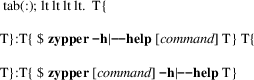
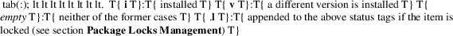
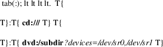
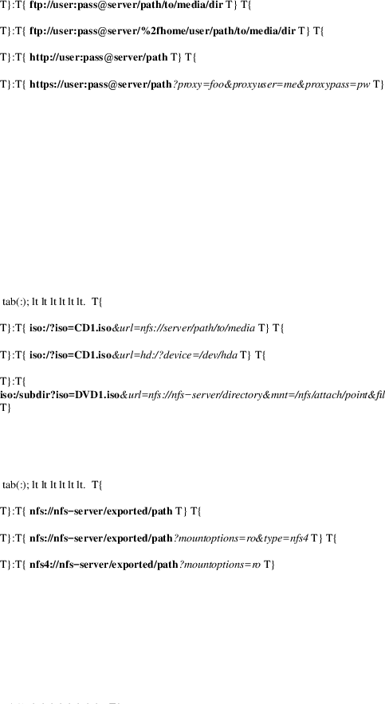
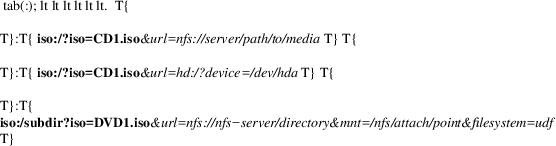
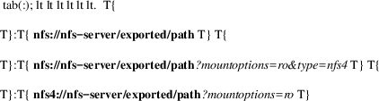
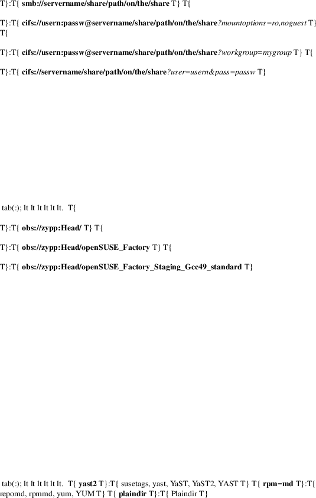
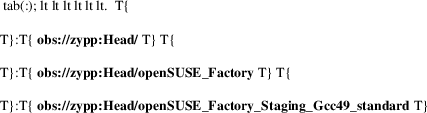
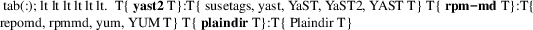
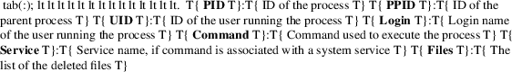

zypper − Command−line interface to ZYpp system management library (libzypp)
zypper [−−global−opts] command [−−command−opts] [command−arguments]
zypper subcommand [−−command−opts] [command−arguments]
zypper help command
zypper is a command−line interface to ZYpp system management library (libzypp). It can be used to install, update, remove software, manage repositories, perform various queries, and more.
Most of the following concepts are common for all applications based on the libzypp package management library, but there are some zypper specifics.
Repositories
Libzypp works with package metadata, that is information
about packages and their relations extracted from RPM
packages and other data like patch information, pattern
definitions, etc. These data are stored together with the
RPM files in folders called repositories.
Repositories can be placed on various media like an HTTP or
FTP server, DVD, or a folder on a local disc.
There is a special set of commands in zypper intended to manipulate repositories. Also many commands and options take a repository as an argument. See section COMMANDS, subsection Repository Management for more details.
GPG
checks
Zypp verifies the authenticity of repository metadata by
checking their GPG signature. If the repository metadata are
signed with a trusted key and and successfully verified,
packages from that repository are accepted for installation
if they match the checksum provided in the metadata. If the
repository metadata are not signed, the signature of each
downloaded rpm package is checked before accepting it for
installation.
This default behavior can be tuned by explicitly setting the variables repo_gpgcheck and/or pkg_gpgcheck in the ZYpp configuration file (/etc/zypp/zypp.conf) to perform those checks always (if on) or never (if off).
Disabling GPG checks is not recommended. Signing data enables the recipient to verify that no modifications occurred after the data were signed. Accepting data with no, wrong or unknown signature can lead to a corrupted system and in extreme cases even to a system compromise.
Resource
Identifiers (URI)
To specify locations of repositories or other resources (RPM
files, .repo files) you can use any type of URIs supported
by libzypp. See section COMMANDS, subsection
Repository Management for a complete list and usage
examples.
Zypper also accepts special URIs identifying openSUSE Build Service (OBS) repositories in the addrepo command. These URIs have the form of obs://project/[platform], where project is the name of the OBS project and platform is the target platform (OS) for which the repository is intended. If platform is omitted, the obs.platform value from zypper.conf is used. See also other options in the [obs] section of zypper.conf.
For example: obs://server:http/openSUSE_11.3.
In addition to these URIs you can use plain directory and file paths in which case zypper automatically treats them as dir:/path URI.
Refresh
Refreshing a repository means downloading metadata of
packages from the medium (if needed), storing it in local
cache (typically under
/var/cache/zypp/raw/alias directory) and
preparsing the metadata into .solv files (building
the solv cache), typically under
/var/cache/zypp/solv/alias.
The metadata get refreshed either automatically or on user request. An automatic refresh takes place right before reading metadata from the database if the auto−refresh is enabled for the repository and the metadata is reported to be out of date. If the auto−refresh is disabled, the repository will only be refreshed on user request. You can request a refresh by calling zypper refresh (see the documentation of the refresh command for details).
The repository metadata are checked for changes before actually doing the refresh. A change is detected by downloading one or two metadata index files (small files) and comparing the checksums of the cached ones and the remote ones. If the files differ, the repository is out of date and will be refreshed.
To delay the up−to−date check (and thus the automatic refresh) for a certain number of minutes, edit the value of the repo.refresh.delay attribute of ZYpp config file (/etc/zypp/zypp.conf). This means, zypper will not even try to download and check the index files, and you will be able to use zypper for operations like search or info without internet access or root privileges.
Services
Services are one level above repositories and serve to
manage repositories or to do some special tasks. Libzypp
currently supports Repository Index Service (RIS) and
Plugin Service.
Repository Index Service (RIS) is a special type of repository which contains a list of other repositories. This list can be generated dynamically by the server according to some URI parameters or user name, or can be static. Once such service is added to your system, zypper takes care of adding, modifying, or removing these repositories on your system to reflect the current list. See section Service Management and http://old−en.opensuse.org/Standards/Repository_Index_Service for more details.
Package
Types
Zypper works with several types of resource objects, called
resolvables. A resolvable might be a package,
patch, pattern, product; basically any
kind of object with dependencies to other
objects.
package
An ordinary RPM package.
patch
A released patch conflicts with the affected/vulnerable versions of a collection of packages. As long as any of these affected/vulnerable versions are installed, the conflict triggers and the patch is classified as needed. Selecting the patch, the conflict is resolved by updating all installed and affected/vulnerable packages to a version providing the fix. When updating the packages zypper always aims for the latest available version.
Depending on the kind of defect, patches are classified by category and severity. Commonly used values for category are security, recommended, optional, feature, document or yast. Commonly used values for severity are critical, important, moderate, low or unspecified.
pattern
A group of packages required or recommended to install some functionality.
product
A group of packages which are necessary to install a product.
srcpackage
Source code package (.src.rpm). This type works in search and install commands.
application
Focuses on packages a user might want to install and hide away supporting packages which are selected via package dependencies anyway (see http://people.freedesktop.org/~hughsient/appdata/)
Throughout this manual we will often refer to resolvables simply as packages and to resolvable types as package type or kind. These type names can be used as arguments of −−type option in several commands like install, info, or search. Commands should also allow to specify resolvables as KIND:NAME (e.g. patch:openSUSE−2014−7).
Package
Dependencies
Software packages depend on each other in various ways.
Packages usually require or recommend other
packages, but they can also conflict with other
packages. Packages can also support specific hardware or
language settings. Zypper uses a dependency solver to
find out what packages need to be installed to satisfy the
user’s request. See
http://old−en.opensuse.org/Software_Management/Dependencies
for more information.
Package File
Conflicts
File conflicts happen when two packages attempt to install
files with the same name but different contents. This may
happen if you are installing a newer version of a package
without erasing the older version, of if two unrelated
packages each install a file with the same name.
As checking for file conflicts requires access to the full filelist of each package being installed, zypper will check for file conflict only if all packages are downloaded in advance (see −−download−in−advance).
As the reason for file conflicts usually is a poor package design or lack of coordination between the the people building the packages, they are not easy to resolve. By using the −−replacefiles option you can force zypper to replace the conflicting files. Nevertheless this may damage the package whose file gets replaced.
zypper provides a number of commands. Each command accepts the options listed in the GLOBAL OPTIONS section. These options must be specified before the command name. In addition, many commands have specific options, which are listed in this section. These command−specific options must be specified after the name of the command and before any of the command arguments.
Zypper also provides limited support for writing extensions/subcommands in any language. See section SUBCOMMANDS for details.
General
Commands
help [command]
Shows help texts. If invoked without any argument (just zypper or zypper help), zypper displays global help text which lists all available global options and commands.
If invoked with a command name argument, zypper displays help for the specified command, if such command exists. Long as well as short variants of the command names can be used.
For your convenience, zypper help can also be invoked in any of the following ways:

shell (sh)
Starts a shell for entering multiple commands in one session. Exit the shell using exit, quit, or Ctrl−D.
The shell support is not complete so expect bugs there. However, there’s no urgent need to use the shell since libzypp became so fast thanks to the SAT solver and its tools (openSUSE 11.0), but still, you’re welcome to experiment with it.
Package
Management Commands
info (if) [options] name...
Displays detailed information about the specified packages.
For each specified package, zypper finds the best available version in defined repositories and shows information for this package.
−r, −−repo alias|name|#|URI
Work only with the repository specified by the alias, name, number or URI. This option can be used multiple times.
−t, −−type type
Type of package (default: package). See section Package Types for list of available package types.
−−provides
Show symbols the package provides.
−−requires
Show symbols the package requires.
−−conflicts
Show symbols the package conflicts with.
−−obsoletes
Show symbols the package obsoletes.
−−recommends
Show symbols the package recommends.
−−suggests
Show symbols the package suggests.
Examples:
$ zypper info workrave
Show information about package workrave
$ zypper info −t patch libzypp
Show information about patch libzypp
$ zypper info −t pattern lamp_server
Show information about pattern lamp_server
install (in) [options] name|capability|rpm_file_uri...
Install or update packages.
The packages can be selected by their name or by a capability they provide.
A capability is formed by "NAME[.ARCH][ OP EDITION]", where ARCH is an architecture code, OP is one of <, <=, =, >=, or > and EDITION is "VERSION[−RELEASE]". For example: zypper=0.8.8−2 The NAME component of a capability is not only a package name but any symbol provided by packages: /bin/vi, libcurl.so.3, perl(Time::ParseDate). Just remember to quote to protect the special characters from the shell, for example: zypper\>0.8.10 or 'zypper>0.8.10'.
If EDITION is not specified, the newest installable version will be installed. This also means that if the package is already installed and newer versions are available, it will get upgraded to the newest installable version.
If ARCH is not specified, or the last dot of the capability name string is not followed by known architecture, the solver will treat the whole string as a capability name. If the ARCH is known, the solver will select a package matching that architecture and complain if such package cannot be found.
Zypper is also able to install plain RPM files while trying to satisfy their dependencies using packages from defined repositories. You can install a plain RPM file by specifying its location in the install command arguments either as a local path or an URI. E.g.:
$ zypper install ~/rpms/foo.rpm http://some.site/bar.rpm.
Zypper will report packages that it cannot find. Further, in interactive mode, zypper proceeds with installation of the rest of requested packages, and it will abort immediately in non−interactive mode. In both cases zypper returns ZYPPER_EXIT_INF_CAP_NOT_FOUND after finishing the operation.
Zypper will download the files into its cache directory (/var/cache/zypper/RPMS), add this directory as a temporary plaindir repository and mark the respective packages for installation.
In the install command, you can specify also packages you wish to remove in addition to the packages you wish to install, by prepending their names by a − or ~ character. For example:
$ zypper install vim −emacs
$ zypper remove emacs +vim
will both install vim and remove emacs. Note that if you choose to use − with the first package you specify, you need to write −− before it to prevent its interpretation as a command option:
$ zypper install — −boring−game great−game great−game−manual
−r, −−repo alias|name|#|URI
Work only with the repository specified by the alias, name, number or URI. This option can be used multiple times.
Using −−repo is discouraged as it currently hides unmentioned repositories from the resolver, leading to inexpertly decisions. In the future −−repo will become an alias for −−from.
−t, −−type type
Type of package to install (default: package). See section Package Types for list of available package types. Use zypper se −t type [name] to look for available items of this type and zypper info −t type name to display more detailed information about the item.
If patch is specified, zypper will install and/or remove packages to satisfy specified patch. This is a way to ensure that specific bug fix is installed. Use zypper list−patches to look for available needed patches.
If product or pattern are specified, zypper ensures that all required (and optionally recommended) packages are installed.
−n, −−name
Select packages by their name, don’t try to select by capabilities.
−f, −−force
Install even if the item is already installed (reinstall), downgraded or changes vendor or architecture.
−−oldpackage
Allow to replace a newer item with an older one. Handy if you are doing a rollback. Unlike −−force it will not enforce a reinstall, if the item is already installed with the requested version.
−−from alias|name|#|URI
Select packages from specified repository. If strings specified as arguments to the install command match packages in repositories specified in this option, they will be marked for installation. This option currently implies −−name, but allows using wildcards for specifying packages.
−C, −−capability
Select packages by capabilities.
−l, −−auto−agree−with−licenses
Automatically say yes to third party license confirmation prompt. By using this option, you choose to agree with licenses of all third−party software this command will install. This option is particularly useful for administrators installing the same set of packages on multiple machines (by an automated process) and have the licenses confirmed before.
−−debug−solver
Create solver test case for debugging. Use this option, if you think the dependencies were not solved all right and attach the resulting /var/log/zypper.solverTestCase directory to your bug report. To use this option, simply add it to the problematic install or remove command.
−−no−recommends
By default, zypper installs also packages recommended by the requested ones. This option causes the recommended packages to be ignored and only the required ones to be installed.
−−replacefiles
Install the packages even if they replace files from other, already installed, packages. Default is to treat file conflicts as an error. −−download−as−needed disables the file conflict check because access to all packages file lists is needed in advance in order to perform the check.
−R, −−no−force−resolution
Do not force the solver to find a solution. Instead, report dependency problems and prompt the user to resolve them manually.
−−force−resolution
Force the solver to find a solution by allowing to remove packages with unfulfilled requirements. This is the default when removing packages (zypper remove *). This option overrides *−−no−force−resolution in case both are specified on the command line.
−D, −−dry−run
Test the installation, do not actually install any package. This option will add the −−test option to the rpm commands run by the install command.
−−details
Show the detailed installation summary.
Download−and−install mode options:
−d, −−download−only
Only download the packages for later installation.
−−download−in−advance
First download all packages, then start installing.
−−download−in−heaps
Download a minimal set of packages that can be installed without leaving the system in broken state, and install them. Then download and install another heap until all are installed. This helps to keep the system in consistent state without the need to download all packages in advance, which combines the advantages of −−download−in−advance and −−download−as−needed. This is the default mode.
NOTE: While the resolver is not capable of building heaps, this behaves the same as −−download−in−advance.
−−download−as−needed
Download one package, install it immediately, and continue with the rest until all are installed.
−−download mode
Use the specified download−and−install mode. Available modes are: only, in−advance, in−heaps, as−needed. See corresponding −−download−mode options for their description.
Examples:
$ zypper install −t pattern lamp_server
Install lamp_server pattern.
$ zypper install −−no−recommends gv
Install GhostScript viewer, but ignore recommended packages.
$ zypper install virtualbox−ose−2.0.6
$ zypper install virtualbox−ose=2.0.6
$ zypper install virtualbox−ose = 2.0.6
Install version 2.0.6 of virtualbox−ose package.
source−install (si) name...
Install specified source packages and their build dependencies. If the name of a binary package is given, the corresponding source package is looked up and installed instead.
This command will try to find the newest available versions of the source packages and uses rpm −i to install them and the packages that are required to build the source package.
Note that the source packages must be available in repositories you are using. You can check whether a repository contains any source packages using the following command:
$ zypper search −t srcpackage −r alias|name|#|URI
−d, −−build−deps−only
Install only build dependencies of specified packages.
−D, −−no−build−deps
Don’t install build dependencies.
−r, −−repo alias|name|#|URI
Work only with the repository specified by the alias, name, number, or URI. This option can be used multiple times.
−−download−only
Only download the packages, do not install.
Examples:
$ zypper si −d dbus−1
Install build dependencies of dbus−1 source package.
verify (ve) [options]
Check whether dependencies of installed packages are satisfied.
In case that any dependency problems are found, zypper suggests packages to install or remove to fix them.
−−no−recommends
By default, zypper installs also packages recommended by the requested ones (the ones needed to fix broken dependencies in this case). This option causes the recommended packages to be ignored and only the required ones to be installed.
−D, −−dry−run
Test the repair, do not actually do anything to the system.
−−details
Show the detailed installation summary.
−r, −−repo alias|name|#|URI
Work only with the repository specified by the alias, name, number, or URI. This option can be used multiple times.
−−debug−solver
Create solver test case for debugging. See the install command for details.
install−new−recommends (inr) [options]
Install newly added packages recommended by already installed ones. This can typically be used to install language packages recently added to repositories or drivers for newly added hardware.
−r, −−repo alias|name|#|URI
Work only with the repository specified by the alias, name, number, or URI. This option can be used multiple times.
−D, −−dry−run
Test the installation, do not actually install anything.
−−details
Show the detailed installation summary.
−−debug−solver
Create solver test case for debugging. See the install command for details.
This command also accepts the Download−and−install mode options described in the install command.
remove (rm) [options] name...
remove (rm) [options] −−capability capability...
Remove (uninstall) packages.
The packages can be selected by their name or by a capability they provide. For details on package selection see the install command description.
−r, −−repo alias|name|#|URI
Work only with the repository specified by the alias, name, number, or URI. This option can be used multiple times.
−t, −−type type
Type of package (default: package). See section Package Types for list of available package types.
Since patches are not installed in sense of copying files or recording a database entry, they cannot be uninstalled, even though zypper shows them as installed. The installed status is determined solely based on the installed status of its required dependencies. If these dependencies are satisfied, the patch is rendered installed.
−n, −−name
Select packages by their name (default).
−C, −−capability
Select packages by capabilities.
−−debug−solver
Create solver test case for debugging. See the install command for details.
−R, −−no−force−resolution
Do not force the solver to find a solution. Instead, report dependency problems and prompt the user to resolve them manually.
−−force−resolution
Force the solver to find a solution by allowing to remove packages with unfulfilled requirements. This is the default when removing packages (zypper remove *). This option overrides *−−no−force−resolution in case both are specified on the command line.
−u, −−clean−deps
Automatically remove dependencies which become unneeded after removal of requested packages.
−U, −−no−clean−deps
No automatic removal of unneeded dependencies.
−D, −−dry−run
Test the removal of packages, do not actually remove anything. This option will add the −−test option to the rpm commands run by the remove command.
−−details
Show the detailed installation summary.
Update
Management Commands
list−updates (lu) [options]
List available updates.
This command will list only installable updates, i.e. updates which have no dependency problems, or which do not change package vendor. This list is what the update command will propose to install. To list all packages for which newer version are available, use −−all option.
−t, −−type type
Type of package (default: package). See section Package Types for list of available package types.
If patch is specified, zypper acts as if the list−patches command was executed.
−r, −−repo alias|name|#|URI
Work only with the repository specified by the alias, name, number, or URI. This option can be used multiple times.
−a, −−all
List all packages for which newer versions are available, regardless whether they are installable or not.
−−best−effort
See the update command for description.
update (up) [options] [packagename]...
Update installed packages with newer versions, where possible.
This command will not update packages which would require change of package vendor unless the vendor is specified in /etc/zypp/vendors.d, or which would require manual resolution of problems with dependencies. Such non−installable updates will then be listed in separate section of the summary as "The following package updates will NOT be installed:".
To update individual packages, specify one or more package names. You can use the * and ? wildcard characters in the package names to specify multiple packages matching the pattern.
−t, −−type type
Type of package (default: package). See section Package Types for list of available package types.
If patch is specified, zypper acts as if the patches command was executed.
−r, −−repo alias|name|#|URI
Work only with the repository specified by the alias, name, number, or URI. This option can be used multiple times.
−−skip−interactive
This will skip interactive patches, that is, those that need reboot, contain a message, or update a package whose license needs to be confirmed.
−−with−interactive
Avoid skipping of interactive patches when in non−interactive mode.
−l, −−auto−agree−with−licenses
Automatically say yes to third party license confirmation prompt. By using this option, you choose to agree with licenses of all third−party software this command will install. This option is particularly useful for administrators installing the same set of packages on multiple machines (by an automated process) and have the licenses confirmed before.
−−debug−solver
Create solver test case for debugging. See the install command for details.
−−no−recommends
By default, zypper installs also packages recommended by the requested ones. This option causes the recommended packages to be ignored and only the required ones to be installed.
−−replacefiles
Install the packages even if they replace files from other, already installed, packages. Default is to treat file conflicts as an error. −−download−as−needed disables the fileconflict check because access to all packages filelists is needed in advance in order to perform the check.
−R, −−no−force−resolution
Do not force the solver to find a solution. Instead, report dependency problems and prompt the user to resolve them manually.
−−force−resolution
Force the solver to find a solution by allowing to remove packages with unfulfilled requirements. This is the default when removing packages (zypper remove *). This option overrides *−−no−force−resolution in case both are specified on the command line.
−D, −−dry−run
Test the update, do not actually install or update any package. This option will add the −−test option to the rpm commands run by the update command.
−−details
Show the detailed installation summary.
−−best−effort
Do a best effort approach to update. This method does not explicitly select packages with best version and architecture, but instead requests installation of a package with higher version than the installed one and leaves the rest on the dependency solver. This method is always used for packages, and is optional for products and patterns. It is not applicable to patches.
This command also accepts the download−and−install mode options described in the install command description.
list−patches (lp) [options]
List all available needed patches.
This command is similar to zypper list−updates −t patch.
Note that optional arguments of some of the following options must be specified using = instead of a space.
−b, −−bugzilla[=#[,...]]
List available needed patches for all Bugzilla issues, or issues whose number matches the given string.
−−cve[=#[,...]]
List available needed patches for all CVE issues, or issues whose number matches the given string.
−−date YYYY−MM−DD[,...]
List only patches issued up to, but not including, the specified date.
−g, −−category category[,...]
List only patches with this category. See section Package Types for a list of commonly used category values.
−−severity severity[,...]
List only patches with this severity. See section Package Types for a list of commonly used severity values.
−−issues[=string[,...]]
Look for issues whose number, summary, or description matches the specified string. Issues found by number are displayed separately from those found by descriptions. In the latter case, use zypper patch−info patchname to get information about issues the patch fixes.
−a, *−−all
By default, only patches that are relevant and needed on your system are listed. This option causes all available released patches to be listed. This option can be combined with all the rest of the list−updates command options.
−r, −−repo alias|name|#|URI
Work only with the repository specified by the alias, name, number, or URI. This option can be used multiple times.
patch−check (pchk)
Check for patches. Displays a count of applicable patches and how many of them have the security category.
See also the EXIT CODES section for details on exit status of 0, 100, and 101 returned by this command.
−−updatestack−only
Check only for patches which affect the package management itself.
−r, −−repo alias|name|#|URI
Check for patches only in the repository specified by the alias, name, number, or URI. This option can be used multiple times.
patch [options]
Install all available needed patches.
If there are patches that affect the package management itself, those will be installed first and you will be asked to run the patch command again.
This command is similar to zypper update −t patch.
−−updatestack−only
Install only patches which affect the package management itself and exit.
−b, −−bugzilla #[,...]
Install patch fixing a Bugzilla issue specified by number. Use list−patches −−bugzilla command to get a list of available needed patches for specific issues.
−−cve #[,...]
Install patch fixing a MITRE’s CVE issue specified by number. Use list−patches −−cve command to get a list of available needed patches for specific issues.
−−date YYYY−MM−DD[,...]
Install only patches issued up to, but not including, the specified date.
−g, −−category category[,...]
Install only patches with this category. Use list−patches −−category command to get a list of available patches with a specific category. See section Package Types for a list of commonly used category values.
−−severity severity[,...]
Install only patches with this severity. Use list−patches −−severity command to get a list of available patches with a specific severity. See section Package Types for a list of commonly used severity values.
−r, −−repo alias|name|#|URI
Work only with the repository specified by the alias, name, number, or URI. This option can be used multiple times.
−−skip−interactive
Skip interactive patches.
−−with−interactive
Avoid skipping of interactive patches when in non−interactive mode.
−l, −−auto−agree−with−licenses
See the update command for description of this option.
−−no−recommends
By default, zypper installs also packages recommended by the requested ones. This option causes the recommended packages to be ignored and only the required ones to be installed.
−−replacefiles
Install the packages even if they replace files from other, already installed, packages. Default is to treat file conflicts as an error. −−download−as−needed disables the fileconflict check because access to all packages filelists is needed in advance in order to perform the check.
−−debug−solver
Create test case for debugging of dependency resolver.
−D, −−dry−run
Test the update, do not actually update.
−−details
Show the detailed installation summary.
This command also accepts the download−and−install mode options described in the install command description.
dist−upgrade (dup) [options]
Perform a distribution upgrade. This command applies the state of (specified) repositories onto the system; upgrades (or even downgrades) installed packages to versions found in repositories, removes packages that are no longer in the repositories and pose a dependency problem for the upgrade, handles package splits and renames, etc.
If no repositories are specified via the −−from option, zypper will do the upgrade with all defined repositories. This can be a problem if the system contains conflicting repositories, like repositories for two different distribution releases. This often happens if one forgets to remove an older release repository after adding a new one, say openSUSE 13.1 and openSUSE 13.2.
For all repositories which have the distribution version within their URL (like http://download.opensuse.org/distribution/13.1/repo/oss) using the $releasever variable instead may be helpful (http://download.opensuse.org/distribution/$releasever/repo/oss). The variable is per default substituted by the current distributions version (13.1) This value can be overwritten using the −−releasever global option. Calling zypper −−releasever 13.2... will cause these repos to use the new location (http://download.opensuse.org/distribution/13.2/repo/oss) without need to add/remove anything. Once the dup is performed, $releasever will default to the new distribution version. See section Repository Management for more info about variable substitution.
Note: distribution upgrades in openSUSE are currently only supported between consecutive releases. To upgrade multiple releases, upgrade each consecutive release one at a time. For more details see http://en.opensuse.org/SDB:System_upgrade and the openSUSE release notes at http://doc.opensuse.org/release−notes/.
−−from alias|name|#|URI
Restricts the upgrade to the specified repositories (the option can be used multiple times) only, but can satisfy dependencies also from the rest of enabled repositories.
−r, −−repo alias|name|#|URI
Work only with the repository specified by the alias, name, number, or URI.
Using −−repo is discouraged as it currently hides unmentioned repositories from the resolver, leading to inexpertly decisions. In the future −−repo will become an alias for −−from.
−l, −−auto−agree−with−licenses
Automatically say yes to third party license confirmation prompt. By using this option, you choose to agree with licenses of all third−party software this command will install. This option is particularly useful for administrators installing the same set of packages on multiple machines (by an automated process) and have the licenses confirmed before.
−−no−recommends
By default, zypper installs also packages recommended by the requested ones. This option causes the recommended packages to be ignored and only the required ones to be installed.
−−replacefiles
Install the packages even if they replace files from other, already installed, packages. Default is to treat file conflicts as an error. −−download−as−needed disables the fileconflict check because access to all packages filelists is needed in advance in order to perform the check.
−−debug−solver
Create solver test case for debugging. See the install command for details.
−D, −−dry−run
Test the upgrade, do not actually install or update any package. This option will add the −−test option to the rpm commands run by the dist−upgrade command.
−−details
Show the detailed installation summary.
This command also accepts the download−and−install mode options described in the install command description.
Expert Options:
Don’t use them unless you know you need them.
−−[no−]allow−downgrade
Whether to allow downgrading installed resolvables [zypp.conf:solver.dupAllowDowngrade].
−−[no−]allow−name−change
Whether to allow changing the names of installed resolvables [zypp.conf:solver.dupAllowNameChange]. Setting this to no will not replace packages which have been renamed.
−−[no−]allow−arch−change
Whether to allow changing the architecture of installed resolvables [zypp.conf:solver.dupAllowArchChange].
−−[no−]allow−vendor−change
Whether to allow changing the vendor of installed resolvables [zypp.conf:solver.dupAllowVendorChange]. Setting this to no might be useful if you do not want packages from foreign repos being dup’ed to the distributions version (or vice versa).
Examples:
$ zypper dup −−from factory −−from packman
Upgrade the system to the latest versions provided by the factory and packman repositories.
Query
Commands
search (se) [options]
[querystring|capability]...
Search for packages matching any of the given search strings. * and ? wildcard characters can be used within search strings. If the search string is enclosed in / (e.g. /^k.*e$/) it’s interpreted as a regular expression. See the install command for details about how to specify a capability.
Results of the search are printed in a table. with columns Status, Name, Type of package, Version, Architecture and Repository. The Status column can contain the following values:

The v status is only shown if the version or the repository matters (see −−details or −−repo), and the installed version differs from the one listed or is from a repository other than specified.
This command accepts the following options:
−−match−substrings
Matches for search strings may be partial words (default).
−−match−words
Matches for search strings may only be whole words.
−−match−exact
Searches for an exact name of the package.
−−provides
Search for packages which provide the search strings.
−−requires
Search for packages which require the search strings.
−−recommends
Search for packages which recommend the search strings.
−−suggests
Search for packages which suggest the search strings.
−−conflicts
Search for packages conflicting with the search strings.
−−obsoletes
Search for packages which obsolete the search strings.
−n, −−name
Useful together with dependency options, otherwise searching in package name is default.
−f, −−file−list
Search in file list of packages.
−d, −−search−descriptions
Search also in summaries and descriptions.
−C, −−case−sensitive
Perform case−sensitive search.
−i, −−installed−only
Show only packages that are already installed.
−u, −−uninstalled−only
Show only packages that are not currently installed.
−t, −−type type
Search only for packages of specified type. See section Package Types for a list of available package types. Multiple −−type options are allowed.
See also the type−specific query commands like packages, patterns, etc.
−r, −−repo alias|name|#|URI
Work only with the repository specified by the alias, name, number, or URI. This option can be used multiple times.
−−sort−by−name
Sort packages by name (default).
−−sort−by−repo
Sort packages by repository, not by name.
−s, −−details
Show all available versions of matching packages, each version in each repository on a separate line.
−v, −−verbose
Like −−details with additional information where the search has matched (useful when searching for dependencies, e.g. −−provides).
Examples:
$ zypper se 'yast*'
Search for YaST packages (quote the string to prevent the shell from expanding the wildcard).
$ zypper se −s −−match−exact kernel−default
Show all available versions of package kernel−default
$ zypper se −dC −−match−words RSI
Look for RSI acronym (case−sensitively), also in summaries and descriptions.
packages (pa) [options] [repository]...
List all available packages or all packages from specified repositories. Similar to zypper search −s −t package.
−r, −−repo alias|name|#|URI
Just another means to specify repositories.
−i, −−installed−only
Show only installed packages.
−u, −−uninstalled−only
Show only packages which are not installed.
−−orphaned
Show packages which are orphaned (without repository).
−−suggested
Show packages which are suggested.
−−recommended
Show packages which are recommended.
−−unneeded
Show packages which are unneeded.
patches (pch) [options] [repository]...
List all available patches from specified repositories, including those not needed. Similar to zypper search −s −t patch.
−r, −−repo alias|name'|#|URI
Just another means to specify repositories.
patterns (pt) [options] [repository]...
List all available patterns or all patterns from specified repositories. Similar to zypper search −s −t pattern.
−r, −−repo alias|name|#|URI
Just another means to specify repositories.
−i, −−installed−only
Show only installed patterns.
−u, −−uninstalled−only
Show only patterns which are not installed.
products (pd) [options] [repository]...
List all available products or all products from specified repositories. Similar to zypper search −s −t product, but shows also the type of the product (base, add−on).
−r, −−repo 'alias|name|#|URI
Just another means to specify repositories.
−i, −−installed−only
Show only installed products.
−u, −−uninstalled−only
Show only products which are not installed.
what−provides (wp) capability
List all packages providing the specified capability. See also the install command for info about specifying capabilities.
The command line is automatically transformed into the appropriate search command, e.g.:
$ zypper what−provides 'zypper>1.6'
$ zypper se −−provides −−match−exact 'zypper>1.6'
Repository
Management
Zypper is able to work with YaST, RPM−MD (yum)
software repositories, and plain directories containing .rpm
files.
Repositories are primarily identified using their URI or alias. Alias serves as a shorthand for the long URI or name of the repository. The name of the repository should briefly describe the repository and is shown to the user in tables and messages. The name is not required, and if not known, the alias is shown instead. The alias is required and uniquely identifies the repository on the system.
The alias, name, URI, or the number from zypper repos list can be used to specify a repository as an argument of various zypper commands and options like refresh, −−repo, or −−from.
Apart from the above, repositories have several other properties which can be set using the commands described in this section below, or by manually editing the repository definition files (.repo files, see section FILES).
Variable substitution:
You can use the following built−in variables within a .repo or .service files name and URI values:
$arch
Use this variable to refer to the system’s CPU architecture.
$basearch
Use this variable to refer to the base architecture of the system. For example, iX86 machines have a base architecture of i386, while AMD64 and Intel64 have x86_64.
$releasever, $releasever_major, $releasever_minor
Use this variable to refer to the version of your openSUSE or SUSE Linux. The value is obtained from the /product/version XML−node in /etc/products.d/baseproduct.
This is useful for related repositories like packman (http://ftp.gwdg.de/pub/linux/packman/suse/$releasever), which shall always fit the installed distribution, even after a distribution upgrade. To help performing a distribution upgrade, the value of $releasever can be overwritten using the −−releasever global option. This way you can easily switch all repositories using $releasever to the new version (provided the server layouts did not change and new repos are already available).
In addition $releasever_major will be set to the leading portion up to (but not including) the 1st dot; $releasever_minor to the trailing portion after the 1st dot. If there’s no dot in $releasever, $releasever_major is the same as $releasever and $releasever_minor is empty.
Remember to protect the $ when using these variables on a shell command line:
zypper ar −f http://ftp.gwdg.de/pub/linux/packman/suse/\$releasever packman
If a variable is followed by an alphanumeric character or underscore it needs to be enclosed in {}:
zypper ar −f http://ftp.gwdg.de/pub/linux/packman/suse/\${releasever}_packman
Bash style definition of default ${variable:−word} and alternate ${variable:+word} values:
SLE−${releasever_major}${releasever_minor:+−SP−$releasever_minor}
To check where you already use $releasever call:
zypper −−releasever @−−HERE−−@ lr −u
Supported URI formats:
scheme: [//[user[:password]@]host[:port]] /path [?query] [#fragment]
Special characters occurring in URI components (like a @ in a password) must be %−encoded (%40).
CD or DVD drive
Optionally with devices list for probing.

FTP/HTTP/HTTPS directory tree
The ftp URL scheme supports absolute and relative paths to the default ftp server directory (RFC1738, Section 3.2.2). To use an absolute path, you have to prepend the path with an additional slash, what results in a /%2f combination (second / encoded to %2f) at the begin of the URL path. This is important, especially in user authenticated ftp, where the users home is usually the default directory of the server (except when the server chroots into the users home directory).
Explicit proxy settings may be passed via optional parameters proxy, proxyport, proxyuser and proxypass.
HTTP authentication methods to use can be defined as comma separated list via optional parameter auth. Valid methods are e.g. basic, digest, ntlm, negotiate. Note, that this list depends on the list of methods supported by the curl library.

Disk volume (partition)
Mandatory device parameter specifying the name of the block device to mount. The name of the optional filesystem defaults to "auto".
hd:/subdir?device=/dev/sda1&filesystem=reiserfs
Local directory tree
dir:/directory/name
Media in an ISO image (loopback mounted)
Mandatory iso parameter specifying the name of the iso file. Optional url parameter specifying the URL to the directory containing the iso file. Optional mnt parameter specifying the preferred attach point for the source media url. Optional filesystem name of the filesystem used in the iso file. Defaults to "auto".

NFS exported directory tree
To use NFSv4 either use schema tnfsv4:// or pass an optional parameter type=nfs4. Additional mountoptions can be passed as comma separated list. Defaults to "ro".

CIFS/SMB directory tree
There is no difference between cifs and smb scheme (any more). In both cases the cifs filesystem is used. Additional mountoptions can be passed as comma separated list. Defaults to "ro,guest". Specify "noguest" to turn off "guest". This is necessary if Samba is configured to reject guest connections.
Optional workgroup or domain parameter set the name of the workgroup. As alternative to passing username:password in the URI authority the parameters user and pass can be used.

OpenSUSE Build Build Service (OBS) repositories
Zypper also accepts special URIs identifying openSUSE Build Service (OBS) repositories in the addrepo command. These URIs have the form of obs://project/[platform], where project is the name of the OBS project and platform is the target platform (OS) for which the repository is intended.
If platform is omitted, openSUSE_$releasever is used unless a value for obs.platform is defined in zypper.conf. If you are following openSUSE_Factory or openSUSE_Tumbleweed you may need to set these as your default platform. But we can only guess, how the directory containing the repository that fits your distribution is named on the server. In case of doubt you need to look up the right URL in a browser.

addrepo (ar) [options] URI alias
addrepo (ar) [options] FILE.repo
Add a new repository specified by URI and assign specified alias to it or specify URI to a .repo file.
Newly added repositories have auto−refresh disabled by default (except for repositories imported from a .repo, having the auto−refresh enabled). To enable auto−refresh, use the −−refresh option of the modifyrepo command.
Also, this command does not automatically refresh the newly added repositories. The repositories will get refreshed when used for the first time, or you can use the refresh command after finishing your modifications with *repo commands. See also METADATA REFRESH POLICY section for more details.
−r, −−repo file.repo
Read URI and alias from specified .repo file
−t, −−type type
Type of repository (yast2, rpm−md, or plaindir) in case the autodetection fails. There are several aliases defined for these types:

−d, −−disable
Add the repository as disabled. Repositories are added as enabled by default.
−c, −−check
Probe given URI.
−C, −−nocheck
Don’t probe URI, probe later during refresh.
−n, −−name
Specify descriptive name for the repository.
−k, −−keep−packages
Enable RPM files caching for the repository.
−K, −−no−keep−packages
Disable RPM files caching.
−f, −−refresh
Enable autorefresh of the repository. The autorefresh is disabled by default when adding new repositories.
Examples:
$ zypper ar −c −n 'Packman 11.1 repo' http://packman.iu−bremen.de/suse/11.1 packman
Add a HTTP repository, probe it, name it Packman 11.1 repo, and use packman as alias.
$ zypper ar http://download.opensuse.org/repositories/zypp:/svn/openSUSE_Factory/zypp:svn.repo
$ zypper ar myreposbackup.repo
Add repositories from a .repo file.
removerepo (rr) [options] alias|name|#|URI...
Delete repositories specified by aliases, names, numbers or URIs.
−−loose−auth
Ignore user authentication data in the URI
−−loose−query
Ignore query string in the URI
repos (lr) [options] [repo]...
List all defined repositories or show detailed information about those specified as arguments
The following data can be printed for each repository found on the system: # (repository number), Alias (unique identifier), Name, Enabled (whether the repository is enabled), GPG Check (whether GPG check for repository metadata (r) and/or downloaded rpm packages (p) is enabled), Refresh (whether auto−refresh is enabled for the repository), Priority, Type (repository meta−data type: rpm−md, yast2, plaindir). Which of the data is shown is determined by command line options listed below and the main.repoListColumns setting from zypper.conf. By default, #, Alias, Name, Enabled, GPG Check and Refresh is shown.
Repository number is a unique identifier of the repository in current set of repositories. If you add, remove or change a repository, the numbers may change. Keep that in mind when using the numbers with the repository handling commands. On the other hand, using the alias instead of the number is always safe.
To show detailed information about specific repositories, specify them as arguments, either by alias, name, number from simple zypper lr, or by URI; e.g. fB zypper lr factory, or zypper lr 2.
−e, −−export FILE.repo|−
This option causes zypper to write repository definition of all defined repositories into a single file in repo file format. If − is specified instead of a file name, the repositories will be written to the standard output.
−a, −−alias
Add alias column to the output.
−n, −−name
Add name column to the output.
−u, −−uri
Add base URI column to the output.
−p, −−priority
Add repository priority column to the output.
−r, −−refresh
Add the autorefresh column to the output.
−d, −−details
Show more information like URI, priority, type, etc.
−E, −−show−enabled−only
Show enabled repositories only.
−U, −−sort−by−uri
Add base URI column and sort the list it.
−P, −−sort−by−priority
Add repository priority column and sort the list by it.
−A, −−sort−by−alias
Sort the list by alias.
−N, −−sort−by−name
Sort the list by name.
Examples:
$ zypper repos −e myreposbackup.repo
Backup your repository setup:
$ zypper lr −pu
List repositories with their URIs and priorities:
renamerepo (nr) alias|name|#|URI new−alias
Assign new alias to the repository specified by alias, name, number, or URI.
Examples:
$ zypper nr 8 myrepo
Rename repository number 8 to myrepo (useful if the repo has some dreadful alias which is not usable on the command line).
modifyrepo (mr) options alias|name|#|URI...
modifyrepo (mr) options −−all|−−remote|−−local|−−medium−type
Modify properties of repositories specified by alias, name, number, or URI or one of the aggregate options.
−e, −−enable
Enable the repository.
−d, −−disable
Disable the repository.
−r, −−refresh
Enable auto−refresh for the repository.
−R, −−no−refresh
Disable auto−refresh for the repository.
−p, −−priority positive−integer
Set priority of the repository. Priority of 1 is the highest, the higher the number the lower the priority. Default priority is 99. Packages from repositories with higher priority will be preferred even in case there is a higher installable version available in the repository with a lower priority.
−n, −−name
Set a descriptive name for the repository.
−k, −−keep−packages
Enable RPM files caching.
−K, −−no−keep−packages
Disable RPM files caching.
−a, −−all
Apply changes to all repositories.
−l, −−local
Apply changes to all local repositories.
−t, −−remote
Apply changes to all remote repositories (http/https/ftp).
−m, −−medium−type type
Apply changes to repositories of specified type. The type corresponds to the repository URI scheme identifier like http, dvd, etc. You can find complete list of valid types at http://en.opensuse.org/openSUSE:Libzypp_URIs.
Examples:
$ zypper mr −kt
Enable keeping of packages for all remote repositories.
$ zypper mr −er updates
Enable repository updates and switch on autorefresh for the repo.
$ zypper mr −da
Disable all repositories.
refresh (ref) [alias|name|#|URI]...
Refresh repositories specified by their alias, name, number, or URI. If no repositories are specified, all enabled repositories will be refreshed.
See also METADATA REFRESH POLICY section for more details.
−f, −−force
Force a complete refresh of specified repositories. This option will cause both the download of raw metadata and parsing of the metadata to be forced even if everything indicates a refresh is not needed.
−b, −−force−build
Force only reparsing of cached metadata and rebuilding of the database. Raw metadata download will not be forced.
−d, −−force−download
Force only download of current copy of repository metadata. Parsing and rebuild of the database will not be forced.
−B, −−build−only
Only parse the metadata and build the database, don’t download raw metadata into the cache. This will enable you to repair damaged database from cached data without accessing network at all.
−D, −−download−only
Only download the raw metadata, don’t parse it or build the database.
−s, −−services
Refresh also services before refreshing repositories.
clean (cc) [options] [alias|name|#|URI]...
Clean the local caches for all known or specified repositories. By default, only caches of downloaded packages are cleaned.
−m, −−metadata
Clean repository metadata cache instead of package cache.
−M, −−raw−metadata
Clean repository raw metadata cache instead of package cache.
−a, −−all
Clean both repository metadata and package caches.
Service
Management
The services, addservice,
removeservice, modifyservice, and
refresh−services commands serve for
manipulating services. A service is specified by its URI and
needs to have a unique alias defined (among both services
and repositories).
Standalone repositories (not belonging to any service) are treated like services, too. The ls command will list them, ms command will modify them, etc. Repository specific options, like −−keep−packages are not available here, though. You can use repository handling commands to manipulate them.
addservice (as) [options] URI alias
Adds a service specified by URI to the system. The alias must be unique and serves to identify the service.
Newly added services are not refreshed automatically. Use the refresh−services command to refresh them. Zypper does not access the service URI when adding the service, so the type of the services is unknown until it is refreshed.
This command also allows one to add also ordinary repositories when used with −−type option, where you specify the type of the repository. See the addrepo command for the list of supported repository types.
−t, −−type type
Type of the service (possible values: ris) in case the autodetection fails. There are several aliases defined for this type:
−d, −−disable
Add the service as disabled.
−n, −−name
Specify descriptive name for the service.
removeservice (rs) [options] alias|name|#|URI...
Remove specified service from the system. Removing a service will also remove of all of its repositories.
−−loose−auth
Ignore user authentication data in the URI.
−−loose−query
Ignore query string in the URI.
modifyservice (ms) options alias|name|#|URI
modifyservice (ms) options −−all|−−remote|−−local|−−medium−type
Modify properties of specified services.
Common Options
These options are common to all types of services and repositories.
−d, −−disable
Disable the service (but don’t remove it).
−e, −−enable
Enable a disabled service.
−r, −−refresh
Enable auto−refresh of the service.
−R, −−no−refresh
Disable auto−refresh of the service.
−n, −−name
Set a descriptive name for the service.
−a, −−all
Apply changes to all services.
−l, −−local
Apply changes to all local services.
−t, −−remote
Apply changes to all remote services.
−m, −−medium−type type
Apply changes to services of specified type.
RIS Service Specific Options
These options are ignored by services other than Repository Index Services.
−i, −−ar−to−enable alias
Schedule an RIS service repository to be enabled at next service refresh.
−I, −−ar−to−disable alias
Schedule an RIS service repository to be disabled at next service refresh.
−j, −−rr−to−enable alias
Remove a RIS service repository to enable.
−J, −−rr−to−disable "alias'
Remove a RIS service repository to disable.
−k, −−cl−to−enable
Clear the list of RIS repositories to enable.
−K, −−cl−to−disable
Clear the list of RIS repositories to disable.
services (ls) [options]
List services defined on the system.
−u, −−uri
Show also base URI of repositories.
−p, −−priority
Show also repository priority.
−d, −−details
Show more information like URI, priority, type.
−r, −−with−repos
Show also repositories belonging to the services.
−P, −−sort−by−priority
Sort the list by repository priority.
−E, −−show−enabled−only
Show enabled services only. If used together with −−with−repos a disabled services owning (manually) enabled repositories are shown as well.
−U, −−sort−by−uri
Sort the list by URI.
−N, −−sort−by−name
Sort the list by name.
refresh−services (refs) [options] alias|name|#|URI...
Refreshing a service means executing the service’s special task.
RIS services add, remove, or modify repositories on your system based on current content of the repository index. A differing enabled/disabled state caused by manually calling modify−repo on a service repository however will not be reverted unless the −−restore−status option is used, or the repository index explicitly requests the change.
Services only manage defined repositories, they do not refresh them. To refresh also repositories, use −−with−repos option or the refresh command.
−f, −−force
Force a complete refresh of specified services. This option will cause both the download of raw metadata and parsing of the metadata to be forced even if everything indicates a refresh is not needed.
−r, −−with−repos
Refresh also the service repositories.
−R, −−restore−status
Also restore service repositories enabled/disabled state to the repository index default. Useful after you manually changed some service repositories enabled state.
Package
Locks Management
Package locks serve the purpose of preventing changes to the
set of installed packages on the system. The locks are
stored in form of a query in /etc/zypp/locks file
(see also locks(5)). Packages matching this query are then
forbidden to change their installed status; an installed
package can’t be removed, not installed package
can’t be installed. When requesting to install or
remove such locked package, you will get a dependency
problem dialog.
locks (ll)
List currently active package locks.
−m, −−matches
Show the number of resolvables matched by each lock. This option requires loading the repositories.
−s, −−solvables
List the resolvables matched by each lock. This option requires loading the repositories.
Add a package lock. Specify packages to lock by exact name or by a glob pattern using *** and '*?*' wildcard characters.
−r, −−repo alias|name|#|URI
Restrict the lock to the specified repository.
−t, −−type type
Lock only packages of specified type (default: package). See section Package Types for list of available package types.
removelock (rl) [options] lock−number|package−name...
Remove specified package lock. Specify the lock to remove by its number obtained with zypper locks or by the package name.
−r, −−repo alias|name|#|URI
Restrict the lock to the specified repository.
−t, −−type type
Restrict the lock to packages of specified type (default: package). See section Package Types for list of available package types.
cleanlocks (cl)
Remove unused locks.
This command looks for locks that do not currently (with regard to repositories used) lock any package and for each such lock it asks user whether to remove it.
Other
Commands
versioncmp (vcmp) version1 version2
Compare the versions supplied as arguments and tell whether version1 is older or newer than version2 or the two version strings match.
The default output is in human−friendly form. If −−terse global option is used, the result is an integer number, negative/positive if version1 is older/newer than version2, zero if they match.
−m, −−match
Takes missing release number as any release.
For example:
$ zypper vcmp −m 0.15.3 0.15.3−2
0.15.3 matches 0.15.3−2
$ zypper vcmp 0.15.3 0.15.3−2
0.15.3 is older than 0.15.3−2
targetos (tos)
Shows the ID string of the target operating system. The string has a form of distroname−architecture. The string is determined by libzypp, the distroname is read from (current−rootdir)/etc/products.d/baseproduct and the architecture is determined from uname and CPU flags.
licenses
Prints a report about licenses and 'EULA’s of installed packages to standard output.
First, a list of all packages and their licenses and/or EULAs is shown. This is followed by a summary, including the total number of installed packages, the number of installed packages with EULAs that required a confirmation from the user. Since the EULAs are not stored on the system and can only be read from repository metadata, the summary includes also the number of installed packages that have their counterpart in repositories. The report ends with a list of all licenses uses by the installed packages.
This command can be useful for companies redistributing a custom distribution (like appliances) to figure out what licenses they are bound by.
download
Download rpms specified on the commandline to a local directory.
Per default packages are downloaded to the libzypp package cache (/var/cache/zypp/packages; for non−root users $XDG_CACHE_HOME/zypp/packages), but this can be changed by using the global −−pkg−cache−dir option.
Parsable XML−output produced by zypper −−xmlout will include a <download−result> node for each package zypper tried to download. Upon success the location of the downloaded package is found in the path attribute of the <localfile> subnode (xpath: download−result/localpath@path):
<download−result>
<solvable>
<kind>package</kind>
<name>zypper</name>
<edition epoch="0" version="1.9.17"
release="26.1"/>
<arch>x86_64</arch>
<repository name="repo−oss−update
(13.1)"
alias="openSUSE:repo−oss−update"/>
</solvable>
<localfile
path="/var/cache/zypp/pac.../zypper−1.9.17−26.1.x86_64.rpm"/>
</download−result>
−−all−matches
Download all versions matching the commandline arguments. Otherwise only the best version of each matching package is downloaded.
−−dry−run
Don’t download any package, just report what would be done.
source−download
Download source rpms for all installed packages to a local directory.
−d, −−directory dir
Download all source rpms to this directory. Default is /var/cache/zypper/source−download.
−−delete
Delete extraneous source rpms in the local directory. This is the default.
−−no−delete
Do not delete extraneous source rpms.
−−status
Don’t download any source rpms, but show which source rpms are missing or extraneous.
ps
After each upgrade or removal of packages, there may be running processes on the system which continue to use meanwhile deleted files. zypper ps lists all processes using deleted files, together with the corresponding files, and a service name hint, in case it’s a known service. This gives a hint which services may need to be restarted after an update. Usually programs which continue to use deleted shared libraries. The list contains the following information:

−s, −−short
Create a short table not showing the deleted files. Given twice, show only processes which are associated with a system service. Given three times, list the associated system service names only.
−−print format
For each associated system service print format on the standard output, followed by a newline. Any %s directive in format is replaced by the the system service name.
Examples:
$ zypper ps −ss
Show only processes associated with a system service.
$ zypper ps −sss
Short for zypper ps −−print "%s"; list services which might need a restart.
$ zypper ps −−print "systemctl status %s"
Let zypper print the commands to retrieve status information for services which might need a restart.
Subommands
subcommand
Lists available subcommands in /usr/lib/zypper/commands and from elsewhere on your $PATH. See section SUBCOMMANDS for details.
−h, −−help
Help. If a command is specified together with −−help option, command specific help is displayed.
−V, −−version
Print zypper version number and exit.
−c, −−config file
Use specified zypper config file instead of the default files. Other command line options specified together with −−config and having their counterpart in the config file are still preferred. The order of preference with −−config is as follows:
1. Command line options
2. −−config file
3. [/etc/zypp/zypp.conf] (system−wide defaults for all libzypp based applications)
See also FILES section for more information.
−v, −−verbose
Increase verbosity. For debugging output specify this option twice.
−q, −−quiet
Suppress normal output. Brief (esp. result notification) messages and error messages will still be printed, though. If used together with conflicting −−verbose option, the −−verbose option takes preference.
−−[no−]color
Whether to use colors in output if tty supports it. For details see the [color] section in zypper.conf.
−A, −−no−abbrev
Do not abbreviate text in tables. By default zypper will try to abbreviate texts in some columns so that the table fits the width of the screen. If you need to see the whole text, use this option.
−t, −−terse
Terse output for machine consumption. Implies −−no−abbrev and −−no−color.
−s, −−table−style
Specifies table style to use. Table style is identified by an integer number. TODO
−n, −−non−interactive
Switches to non−interactive mode. In this mode zypper doesn’t ask user to type answers to various prompts, but uses default answers automatically. The behavior of this option is somewhat different than that of options like −−yes, since zypper can answer different answers to different questions. The answers also depend on other options like −−no−gpg−checks.
−x, −−xmlout
Switches to XML output. This option is useful for scripts or graphical frontends using zypper.
−i, −−ignore−unknown
Ignore unknown packages. This option is useful for scripts.
−D, −−reposd−dir dir
Use the specified directory to look for the repository definition (.repo) files. The default value is /etc/zypp/repos.d.
−C, −−cache−dir dir
Use an alternative root directory for all caches. The default value is /var/cache/zypp.
−−raw−cache−dir dir
Use the specified directory for storing raw copies of repository metadata files. The default value is /var/cache/zypp/raw.
−−solv−cache−dir dir
Use the specified directory to store the repository metadata cache database files (solv files). The default value is /var/cache/zypp/solv.
−−pkg−cache−dir dir
Use the specified directory for storing downloaded rpm packages. (see addrepo −−keep−packages) The default value is /var/cache/zypp/packages.
−−userdata string
User data is expected to be a simple string without special chars or embedded newlines and may serve as transaction id. It will be written to all install history log entries created throughout this specific zypper call. It will also be passed on to zypp plugins executed during commit. This will enable e.g. a btrfs plugin to tag created snapshots with this string. For zypper itself this string has no special meaning.
Repository Options:
−−no−gpg−checks
Ignore GPG check failures and continue. If a GPG issue occurs when using this option zypper prints and logs a warning and automatically continues without interrupting the operation. Use this option with caution, as you can easily overlook security problems by using it. (see section GPG checks)
−−gpg−auto−import−keys
If new repository signing key is found, do not ask what to do; trust and import it automatically. This option causes that the new key is imported also in non−interactive mode, where it would otherwise got rejected.
−p, −−plus−repo URI
Use an additional repository for this operation. The repository aliased tmp# and named by the specified URI will be added for this operation and removed at the end. You can specify this option multiple times.
−−plus−content tag
Additionally use disabled repositories providing a specific keyword. Disabled repositories are refreshed and those providing the specified tag keyword are temporarily enabled. To enable for example repositories which may provide additional −debuginfo or −debugsource packages use −−plus−content debug. You can specify this option multiple times.
−−disable−repositories
Do not read metadata from repositories. This option will prevent loading of packages from repositories, thus making zypper work only with the installed packages (if −−disable−system−resolvables was not specified).
−−no−refresh
Do not auto−refresh repositories (ignore the auto−refresh setting). Useful to save time when doing operations like search, if there is not a need to have a completely up to date metadata.
−−no−cd
Ignore CD/DVD repositories. When this option is specified, zypper acts as if the CD/DVD repositories were not defined at all.
−−no−remote
Ignore remote repositories like http, ftp, smb and similar. This makes using zypper easier when being offline. When this option is specified, zypper acts as if the remote repositories were not defined at all.
−−releasever version
Set the value of the $releasever variable in all .repo files (default: current distribution version). This can be used to switch to new distribution repositories when performing a distribution upgrade. See section Repository Management and the dist−upgrade (dup) command for details.
To check where you already use $releasever call:
zypper −−releasever @−−HERE−−@ lr −u
Target Options:
−R, −−root dir
Operates on a different root directory. This option influences the location of the repos.d directory and the metadata cache directory and also causes rpm to be run with the −−root option to do the actual installation or removal of packages. See also the FILES section.
−−disable−system−resolvables
This option serves mainly for testing purposes. It will cause zypper to act as if there were no packages installed in the system. Use with caution as you can damage your system using this option.
Zypper subcommands are inspired by git(1). Subcommands are standalone executables that live in the zypper_execdir (/usr/lib/zypper/commands). For subcommands zypper provides a wrapper that knows where the subcommands live, and runs them by passing command options and arguments to them. If a subcommand is not found in the zypper_execdir, the wrapper will look in the rest of your $PATH for it. Thus, it’s possible to write local zypper extensions that don’t live in system space.
This is how to add your own subcommand zypper mytask:
• The executable must be named zypper−mytask.
• The executable must be located your $PATH.
• A manpage for zypper−mytask should be provided and explaining the commands options and return values. It will be shown when calling zypper help mytask.
• Zypper built−in commands take precedence over subcommands with the same name.
• It’s fine to call zypper or use libzypp from within your subcommand.
You can use the built−in zypper subcommand command to get a list of all subcommands in zypper_execdir and from elsewhere on your $PATH.
Using zypper global−options together with subcommands, as well as executing subcommands in zypper shell is currently not supported.
/etc/zypp/zypper.conf, $HOME/.zypper.conf
Global (system−wide) and user’s configuration file for zypper. These files are read when zypper starts up and −−config option is not used.
User’s settings are preferred over global settings. Similarly, command line options override the settings in either of these files. To sum it up, the order of preference is as follows (from highest to lowest):
1. Command line options
2. $HOME/.zypper.conf
3. /etc/zypp/zypper.conf
4. [/etc/zypp/zypp.conf] (system−wide defaults for all libzypp based applications)
See the comments in /etc/zypp/zypper.conf for a list and description of available options.
/etc/zypp/zypp.conf
ZYpp configuration file affecting all libzypp based applications. See the comments in the file for description of configurable properties. Many locations of files and directories listed in this section are configurable via zypp.conf. The location for this file itself can be redefined only by setting $ZYPP_CONF in the environment.
/etc/zypp/locks
File with package lock definitions, see locks(5) manual page for details. The package lock commands (addlock, removelock, etc.) can be used to manipulate this file.
This file is used by all ZYpp−based applications.
/etc/zypp/repos.d
Directory containing repository definition (*.repo) files. You can use the Repository Management commands to manipulate these files, or you can edit them yourself. In either case, after doing the modifications, executing zypper refresh is strongly recommended.
You can use the −−reposd−dir global option to use an alternative directory for this purpose or the −−root option to make this directory relative to the specified root directory.
This directory is used by all ZYpp−based applications.
/etc/zypp/services.d
Directory containing service definition (*.service) files. You can use the Service Management Commands to manipulate these files, or you can edit them yourself. Running zypper refs is recommended after modifications have been done.
This directory is used by all ZYpp−based applications.
/usr/lib/zypper/commands
System directory containing zypper extensions (see section SUBCOMMANDS)
/var/cache/zypp/raw
Directory for storing raw metadata contained in repositories. Use the −−raw−cache−dir global option to use an alternative directory for this purpose or the −−root option to make this directory relative to the specified root directory.
This directory is used by all ZYpp−based applications.
/var/cache/zypp/solv
Directory containing preparsed metadata in form of solv files.
This directory is used by all ZYpp−based applications.
/var/cache/zypp/packages
If keeppackages property is set for a repository (see the modifyrepo command), all the RPM file downloaded during installation will be kept here. See also the clean command for cleaning these cache directories.
This directory is used by all ZYpp−based applications.
/var/log/zypp/history
Installation history log.
~/.zypper_history
Command history for the zypper shell (see the shell command).
There are several exit codes defined for zypper built−in commands for use e.g. within scripts. These codes are defined in header file src/zypper−main.h found in zypper source package. Codes from interval (1−5) denote an error, numbers (100−105) provide a specific information, 0 represents a normal successful run. Following is a list of these codes with descriptions:
0 − ZYPPER_EXIT_OK
Successful run of zypper with no special info.
1 − ZYPPER_EXIT_ERR_BUG
Unexpected situation occurred, probably caused by a bug.
2 − ZYPPER_EXIT_ERR_SYNTAX
zypper was invoked with an invalid command or option, or a bad syntax.
3 − ZYPPER_EXIT_ERR_INVALID_ARGS
Some of provided arguments were invalid. E.g. an invalid URI was provided to the addrepo command.
4 − ZYPPER_EXIT_ERR_ZYPP
A problem is reported by ZYPP library.
5 − ZYPPER_EXIT_ERR_PRIVILEGES
User invoking zypper has insufficient privileges for specified operation.
6 − ZYPPER_EXIT_NO_REPOS
No repositories are defined.
7 − ZYPPER_EXIT_ZYPP_LOCKED
The ZYPP library is locked, e.g. packagekit is running.
8 − ZYPPER_EXIT_ERR_COMMIT
An error occurred during installation or removal of packages. You may run zypper verify to repair any dependency problems.
100 − ZYPPER_EXIT_INF_UPDATE_NEEDED
Returned by the patch−check command if there are patches available for installation.
101 − ZYPPER_EXIT_INF_SEC_UPDATE_NEEDED
Returned by the patch−check command if there are security patches available for installation.
102 − ZYPPER_EXIT_INF_REBOOT_NEEDED
Returned after a successful installation of a patch which requires reboot of computer.
103 − ZYPPER_EXIT_INF_RESTART_NEEDED
Returned after a successful installation of a patch which requires restart of the package manager itself. This means that one of patches to be installed affects the package manager itself and the command used (e.g. zypper update) needs to be executed once again to install any remaining patches.
104 − ZYPPER_EXIT_INF_CAP_NOT_FOUND
Returned by the install and the remove command in case any of the arguments does not match any of the available (or installed) package names or other capabilities.
105 − ZYPPER_EXIT_ON_SIGNAL
Returned upon exiting after receiving a SIGINT or SIGTERM.
Zypper subcommands (see section SUBCOMMANDS) may return different codes which should be described in the commands man page. Call zypper help subcommand to see the subcommands man page if one is provided.
https://github.com/openSUSE/zypper
Martin Vidner
<mvidner@suse.cz>
Jan Kupec <>
Michael Andres <ma@suse.de>
Duncan Mac−Vicar <dmacvicar@suse.de>
Josef Reidinger <jreidinger@suse.cz>
Stanislav Visnovsky <visnov@suse.cz>
locks(5), zypper−log(8), YaST2(8)